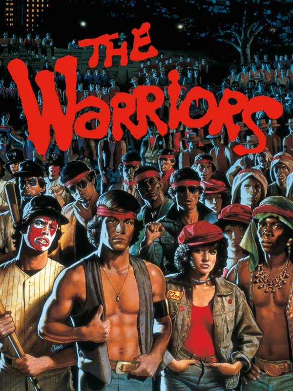

How to enter
Enter the combo on the controller during play.
These are PS2 codes. The PSP and Xbox versions use different combos, which aren't listed here yet.

Enter the combo on the controller during play.
These are PS2 codes. The PSP and Xbox versions use different combos, which aren't listed here yet.
Codes last checked against sources on .
Wrong or missing code? Use Report on the cheat, open an issue or send a pull request on GitHub. Each game is one JSON file.